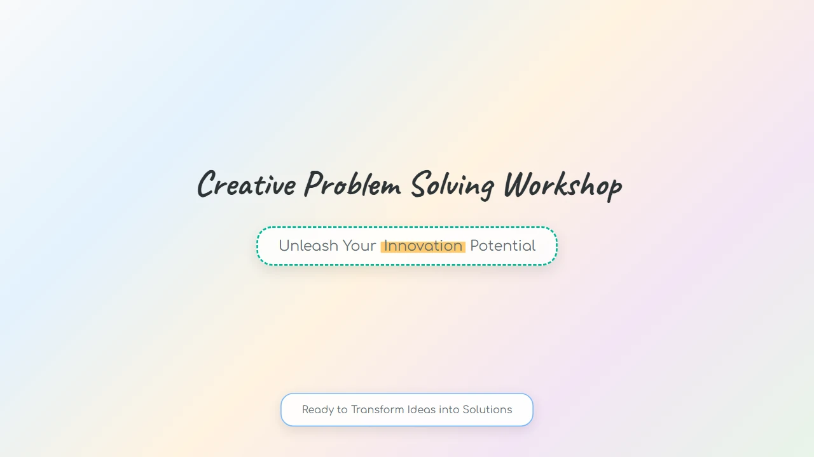
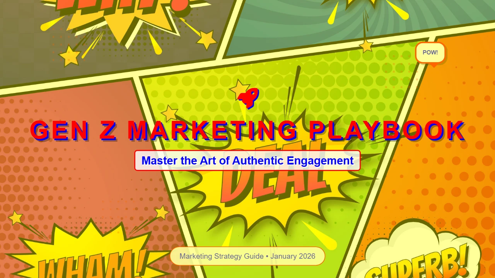
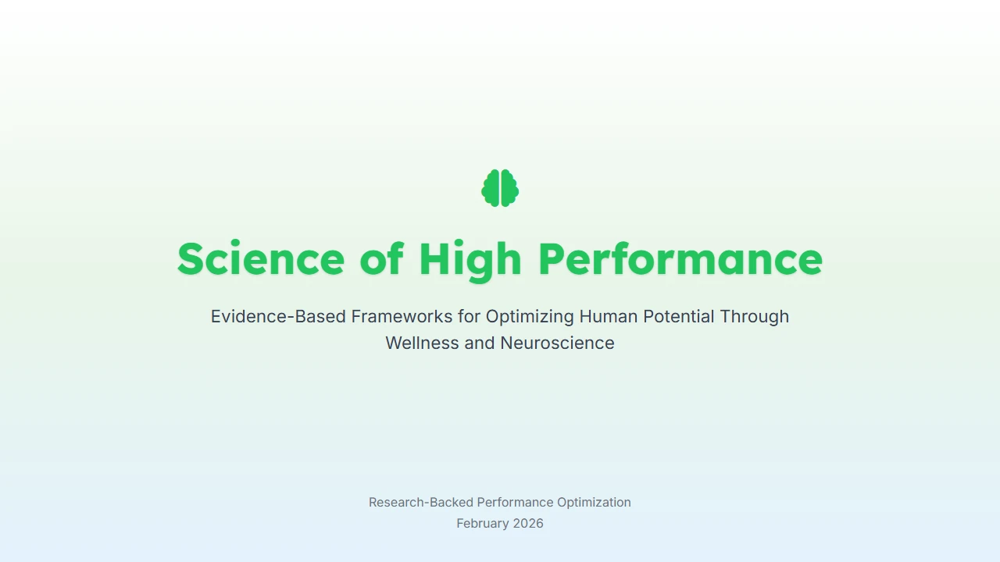
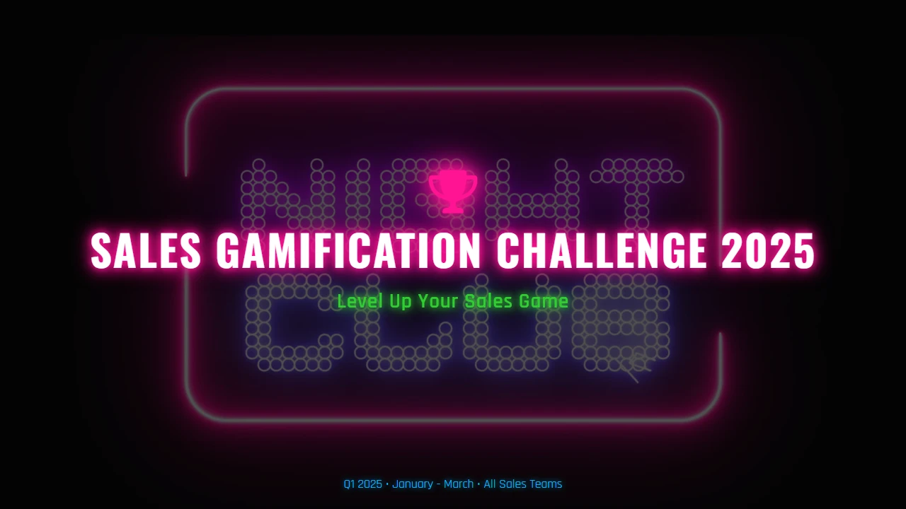
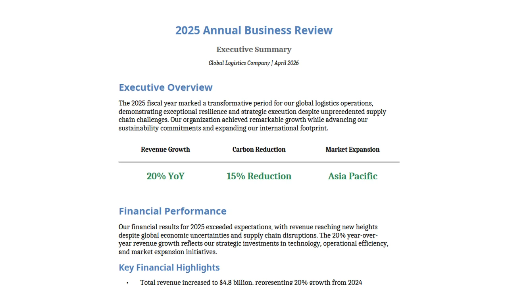
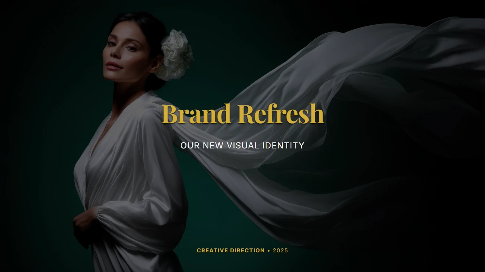
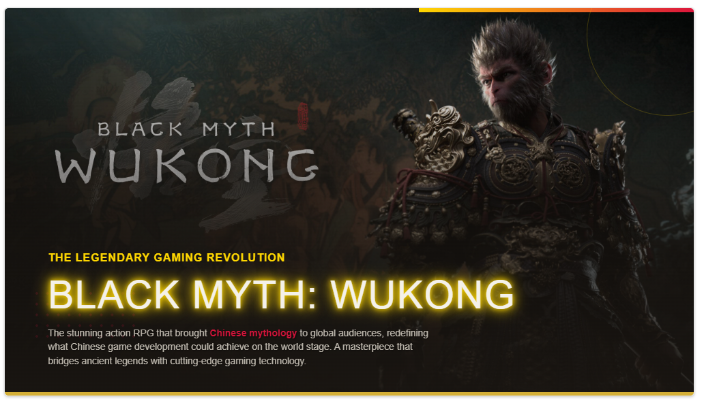
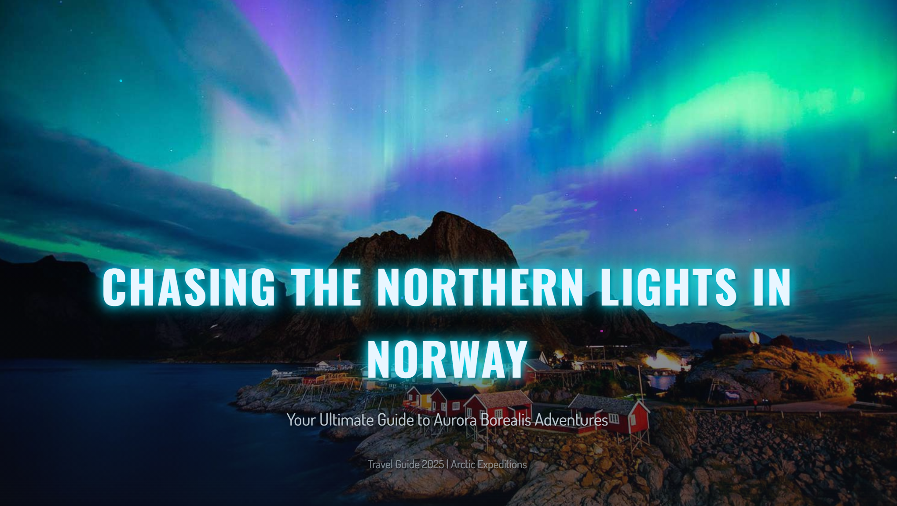
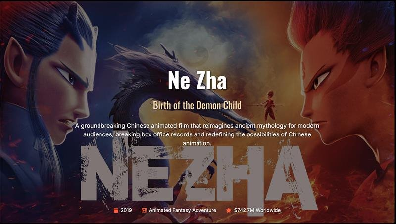
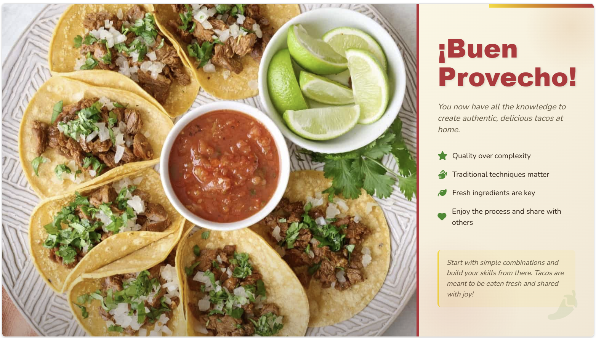

Office Agent Capability Showcase
Learns as you work. Works the way you want.
Office Agent turns Taste++, Auto-Evol Sector Skills, WXP Skills, Less AI More Human, Browser Operator and more into reusable components that can strengthen Microsoft's agent products.
Hi tang, what can I do for you?
+
 Create slide
Write document
Create slide
Write document
 Analyze data
Analyze data
For You
Advertising & Sales
Marketing
Product Research






Capability 01
Taste++
Taste · GitHubWatch taste come alive — every deck below is generated end-to-end, with adaptive themes, on-brand art, and a cinematic sense of design that feels hand-crafted.




Taste score vs. leading agents
TDDEval · 10/07
DeepWork × Societas PPT Skill
Increase Taste with AI Image Gen
We partnered with DeepWork to bring TDD into its PPT experience — generating consistent, on-theme imagery end-to-end, so every deck reads like it was art-directed. Hover a deck to pause and explore.
70.75
82.25
+11.50
Taste score after integration
Self-evolving rubric
Taste Auto Evolution
The taste rubric behind web-app generation in Societas — auto-weighted across four dimensions of what great design demands.
Visual Excellence40%
Color mastery · typography drama · effects authenticity — does the design feel inevitable for this brand?
Animation30%
4-stage choreography · scroll sync · spring physics — does motion tell an emotional story?
Layout20%
Grid-breakers · asymmetry · scroll-triggered morphing — structured disruption with purpose.
Technical Excellence10%
60 fps · accessibility · mobile breakpoints · zero rendering bugs.
Visual Excellence
Animation
Layout
Technical Excellence
Final Score
Validation Round